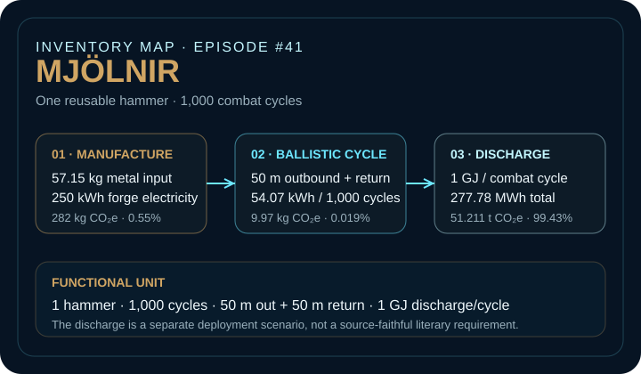
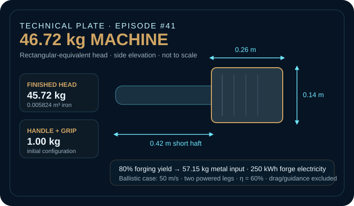
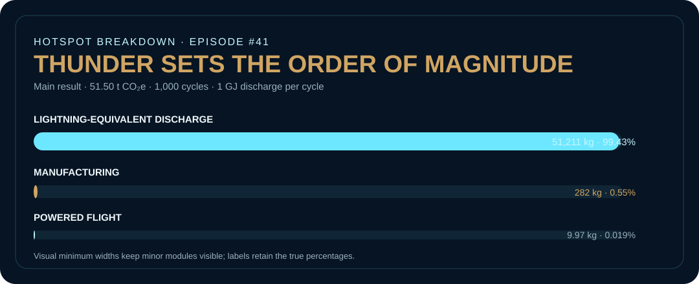

EPISODE #41 · MYTHS & LEGENDS
Mjölnir
What happens when thunder becomes the product?
THE SUBJECT
The Edda defines the function. The model defines the energy.
Snorri Sturluson’s Skáldskaparmál §43 supplies the source-faithful requirements: Sindri forges the head from iron, the hammer resists failure, it does not miss when thrown, it returns to the hand and its fore-haft is short. The website model preserves those requirements while treating dimensions, velocity, efficiency and service cycles as explicit engineering assumptions.
The electrical discharge is deliberately kept separate from the literary evidence. It is a deployment scenario used to test the culturally familiar thunder function, not a claim that the cited passage specifies lightning. This separation is crucial because the discharge, not the physical hammer, determines the headline result.
Compact machine
46.72 kg finished tool: a 45.72 kg forged iron head plus a short 0.42 m hardwood handle and grip.
Combat cycle
1,000 cycles, each with 50 m outbound flight, 50 m powered return and a modeled speed of 50 m/s.
Thunder module
1 GJ per discharge equals 277.78 kWh per cycle and 277.78 MWh across the functional unit.
Main hotspot
The lightning-equivalent discharge contributes 51.211 t CO₂e, or 99.43% of the modeled total.
VISUAL MODEL
Hammer, return, thunder
Three calculation modules keep the physical product, the powered return and the scenario discharge analytically separate.


LIFE CYCLE INVENTORY
What enters the system
Material and electricity factors use the supplied UK Government GHG Conversion Factors 2026 full set. Modern factors are transparent accounting proxies, not a claim of representativeness for Asgard.
| Stage | Component / activity | Activity data | Climate change | Modelling basis |
|---|---|---|---|---|
| Manufacture | Primary metal input | 0.05715 t | 218.42 kg CO₂e | 45.72 kg finished iron head at 80% forging yield; primary-metal screening proxy. |
| Manufacture | Hardwood handles | 0.00321 t | 0.86 kg CO₂e | Initial handle plus two replacement sets; 70% woodworking yield. |
| Manufacture | Grip replacements | 0.00075 t | 16.73 kg CO₂e | Three grip sets over the functional unit. |
| Manufacture | Forge and finishing electricity | 250 kWh | 46.09 kg CO₂e | Combined electricity-consumption proxy: 0.18436 kg CO₂e/kWh. |
| Ballistic cycle | Powered outbound + return | 54.07 kWh / 1,000 cycles | 9.97 kg CO₂e | 46.7168 kg hammer, 50 m/s, two powered legs and 60% system efficiency; drag and guidance excluded. |
| Discharge | Lightning-equivalent energy | 277,777.78 kWh / 1,000 cycles | 51,211 kg CO₂e | 1 GJ per cycle translated to electricity equivalent; scenario module, not a literary-source requirement. |
Included
Primary metal, wood and grip production, forge/workshop electricity, powered-flight equivalent and lightning-equivalent discharge.
Excluded
Specific mining and transport, charcoal and direct forge fuels, Thor, targets, sound and heat, recovery and end of life.
Evidence rule
The ancient text defines performance. Dimensions, velocities, efficiencies and service cycles are reconstruction assumptions. Lightning remains a separate scenario module.
HOTSPOT
The head is not the product-system hotspot
The physical hammer establishes engineering credibility and durability. Once a gigajoule-scale discharge is repeated 1,000 times, it contributes less than one percent of the system footprint.

Main result
51.50 t CO₂e
For 1,000 combat cycles at 1 GJ discharge per cycle.
Per combat cycle
51.50 kg CO₂e
The denominator is intentionally operational rather than one-off product mass.
Discharge
51.211 t CO₂e
99.43% of the total result.
No-discharge residual
0.292 t CO₂e
Manufacturing plus powered flight over the same 1,000 cycles.
Discharge-energy sensitivity
0 GJ → 0.292 t CO₂e
0.1 GJ → 5.413 t
1 GJ → 51.503 t
10 GJ → 512.403 t CO₂e
One order of magnitude in event energy creates almost one order of magnitude in total GWP.
Material circularity
Closed-loop metal reduces the manufacturing module from 282 kg to 157 kg CO₂e, a 44% reduction in the physical product footprint.
At total-system level the benefit is only −0.24% because the discharge is unchanged.
Speed sensitivity
At 25 m/s the total is 51.496 t CO₂e; at 100 m/s it is 51.533 t CO₂e. Flight energy changes quadratically, but the module is too small to move the headline order of magnitude.
Design priority
Decarbonize, recover or redefine the discharge energy before optimizing material mass. Report the physical product footprint alongside the deployment scenario so the conclusion remains interpretable.
THE VERDICT
The head carries the legend.
The return proves the function.
The footprint lives in the discharge.
Mjölnir is an energy system with a hammer-shaped housing.